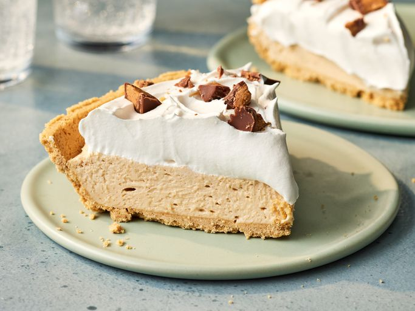

Peanut Butter Pie

Description
Peanut butter pie is never a bad idea. Made with simple ingredients you may
already have on hand, you'll come back to this easy peanut butter pie recipe time after time.
Peanut Butter Pie Ingredients
This peanut butter pie recipe comes together with convenient ingredients. Here's what you'll need:
-
Cream cheese: This rich and creamy peanut butter pie starts with a package of cream cheese.
-
Peanut butter: Of course, you'll need peanut butter! Opt for the smooth kind.
-
Confectioners' sugar: Make sure you use confectioners' (a.k.a. powdered) sugar, as it'll blend smoothly into the filling.
-
Frozen whipped topping: A container of frozen whipped topping (such as Cool Whip) is another shortcut ingredient.
-
Graham cracker crust: Use a store-bought or homemade graham cracker crust.
-
Peanut butter cups: Garnish the pie with peanut butter cup candies, such as Reese's.
How to Make Peanut Butter Pie
You'll find the full, step-by-step recipe below — but here's a brief overview of what you can expect when you make this top-rated peanut butter pie:
- Mix together the first three ingredients until smooth.
- Fold in half of the whipped topping, then pour the mixture into the crust.
- Top with the remaining whipped topping and garnish with peanut butter cups.
- Bake, covered, for 45 minutes.
- Chill for at least two hours before serving.
Home